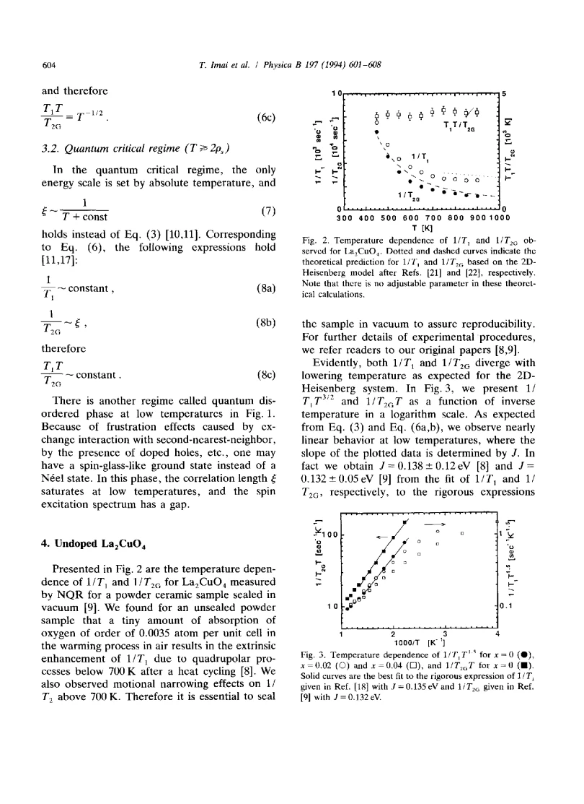
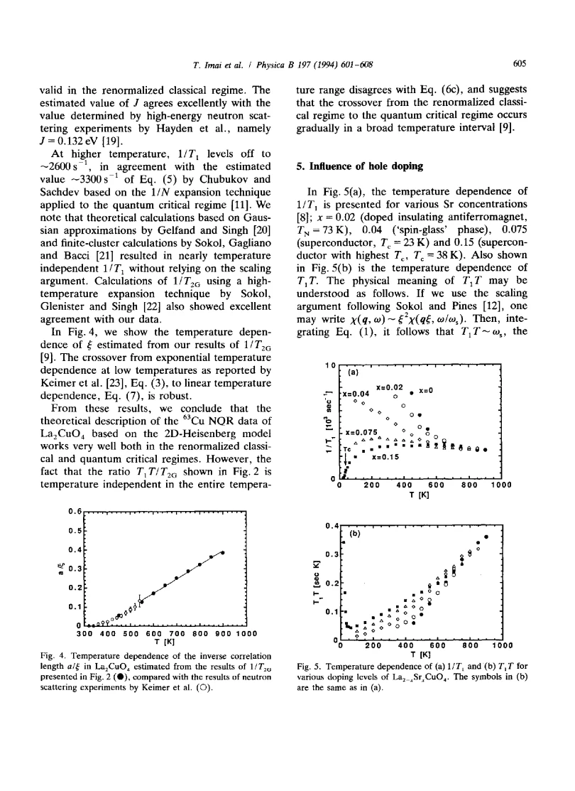

review · Imai · supplied source 1994
High-temperature 63-65Cu NQR and NMR study of the high-temperature superconductor La2-xSrxCuO4
T1 and Gaussian T2 probe complementary spin information, and sealed-parent controls are essential for interpreting high-temperature scaling.
The question: Can Cu NQR/NMR connect parent Heisenberg scaling to doping-dependent low-frequency dynamics?
Before you start: the few terms you need
- LSCO: layered La2-xSrxCuO4; nominal x is Sr per formula unit
- Local probe: a distribution can matter even when the bulk average barely changes
See → explain → test
Understand it in four pictures.
Picture 1 / 4
Two windows on spins
Look for: Longitudinal recovery and Gaussian echo decay encode different susceptibilities.
Swipe across the picture to read every label, or enlarge it below.
- 1/T1
- 1/T2G
Teaching schematic. The two quantities must not be interpreted as identical relaxation channels.
T1 samples dissipative low-frequency response; T2G constrains static AF correlations.
Picture 2 / 4
Clean versus altered sample
Look for: Small oxygen uptake changes the parent curve.
Swipe across the picture to read every label, or enlarge it below.
- Seal parent
- Measure high T
- Check reproducibility
Teaching schematic. Unsealed samples can absorb oxygen and gain extrinsic quadrupolar relaxation.
Vacuum sealing is a necessary reproducibility control at elevated temperature.
Check the original: PDF p. 4
Picture 3 / 4
Correlation length and hole spacing
Look for: At highT the correlated region is short; cooling expands it toward hole spacing.
Swipe across the picture to read every label, or enlarge it below.
- Short ξ
- ξ comparable to hole spacing
Teaching schematic. Illustrative length comparison; exact microscopic patches are not drawn to scale.
Doping affects long-distance growth even if short-distance exchange remains similar.
Picture 4 / 4
Do not overclaim scaling
Look for: The parent is well described but the relaxation ratio has an imperfect asymptotic trend.
Swipe across the picture to read every label, or enlarge it below.
- Parent agreement
- Scaling crossover
- Doped model limitations
Teaching schematic. A constant measured T1T/T2G over the entire range does not exactly match the low-T asymptotic power.
A broad crossover and mobile-hole effects complicate applying the clean model to doped samples.
Predict before revealing
Can lowering parent spin stiffness alone account for every doped curve in this article?
Choose an answer, then compare the reasoning.
The doped rates are not satisfactorily reproduced by stiffness renormalization alone, even with measured correlation lengths.
Read the answer
No; the source reports failures and stresses mobile holes The doped rates are not satisfactorily reproduced by stiffness renormalization alone, even with measured correlation lengths.
Go deeper Follow the full argument
A longer guide to the high-temperature experiment
This eight-page 1994 article reviews the group's Cu NQR/NMR studies from undoped La2CuO4 to optimally superconducting x = 0.15. Its advantage as a reading source is the explicit separation of experimental channels, theoretical regimes and doping trends. The parent is a quasi-two-dimensional antiferromagnet with a small interlayer interaction; the Heisenberg plane alone has no finite-temperature Néel order of the same kind. The measured three-dimensional transition reflects that additional coupling. Strong electronic fluctuations and weak high-temperature polarization make the parent resonance difficult to detect, explaining why measurements of its paramagnetic regime were a substantive experimental advance.
Complementary nuclear observables
The spin-lattice rate 1/T1 weights χ″ at the nuclear frequency, about 30 MHz, by the square of the hyperfine form factor. It therefore examines a very low-energy part of the spin dynamics. Gaussian transverse relaxation 1/T2G is enhanced by electron-mediated indirect nuclear coupling, rather than only nuclear dipolar interactions. For the relevant orientation, the Cu form factor emphasizes the antiferromagnetic zone corner. T2G then constrains static susceptibility and, with assumptions about its momentum shape, the correlation length. Combining dynamic and static channels can estimate a characteristic fluctuation scale. Neither channel alone is a complete momentum-resolved measurement, and their physical meanings should remain separate.
Parent Heisenberg regimes and controls
The source distinguishes renormalized-classical behavior, with rapidly growing ξ on cooling, from a higher-temperature quantum-critical regime where temperature sets the dominant energy scale. The parent rates and inferred ξ agree well with several Heisenberg calculations and neutron results. The sample must be sealed in vacuum: an unsealed powder absorbs small amounts of oxygen during heat cycling and develops extrinsic quadrupolar enhancement; motional narrowing also affects very-high-temperature transverse relaxation. The reported rate convergence at high temperature is thus read only after chemical and relaxation-channel controls. The full parameter-free comparison curves in the article are original theoretical calculations; the website diagrams do not reconstruct them.
Where the scaling description is imperfect
In the low-temperature scaling limit the source quotes 1/T1 proportional to T^(3/2)ξ and 1/T2G proportional to Tξ, yielding a nonconstant asymptotic T1T/T2G. Experiment finds this ratio nearly constant over a broad interval instead. The authors interpret this as a gradual crossover rather than an abrupt clean division between asymptotic regimes. This limitation is valuable: agreement with several rates and an exchange scale does not make every predicted relation exact. For doped insulating samples, simply lowering the parent spin stiffness does not satisfactorily reproduce the full cooling trend, even when neutron-derived ξ is inserted. The presence and mobility of holes must be treated more explicitly.
What remains similar after hole doping
At elevated temperature 1/T1 merges to approximately 2750 ±150 inverse seconds across the studied doping range. The authors infer that short-distance exchange physics remains broadly similar. Their physical picture compares ξ with the average separation between holes: once a growing correlated region includes holes, those holes strongly suppress low-frequency growth relative to the clean parent. This does not imply doping-independent spin stiffness. In x = 0.075 the rate turns down near 300 K, while x = 0.15 remains approximately flat down to roughly 350 K before decreasing. A sharp drop below Tc links the measured spin response to superconductivity. The local-to-itinerant crossover and quantum-disordered comparison remain interpretations with model limits, not a demonstrated unique microscopic mechanism.
How to compare the evidence
The ratio plot is a particularly useful model check because it removes some separate prefactors while retaining a prediction about temperature dependence. In the asymptotic renormalized-classical forms, T1T/T2G varies as T to the power −1/2. The experiment instead finds a broadly constant ratio, even while the two individual channels can each be described reasonably. This prevents an apparently successful estimate of J from being mistaken for a complete description at every temperature. The review discusses a broad crossover into another regime, not an abrupt thermodynamic phase transition at the point where a fit changes. For doped samples the authors further emphasize mobile holes: inserting a shorter correlation length into a parent formula is not sufficient to reproduce all measured low-frequency dynamics.
Translate the mathematics Key equations and symbol meanings
fα(q) = Aα + 2B[cos(qx a) + cos(qy a)]
Symbols: Aα: on-site coupling for direction α; B: transferred coupling; a: lattice spacing.
Explains why a nuclear site and orientation weight some electronic fluctuations more strongly.
ξ/a = 0.498 exp(2πρs/T)/[1 + 0.5T/(2πρs)]
Symbols: ρs: stiffness expressed in kelvin; ξ: correlation length; a: spacing.
Source renormalized-classical interpolation for the parent; not a fit to arbitrary doped samples.
1/T1 ∝ T^(3/2)ξ ; 1/T2G ∝ Tξ
Symbols: T1: longitudinal nuclear recovery; T2G: Gaussian echo decay.
Asymptotic scaling forms, with observed ratio deviations explicitly discussed.
Read the evidence A guided look at the original figures

Open the full original page ↗

Open the full original page ↗
What this paper does—and does not—establish
- Complete text read and key equation/figure pages visually checked; bibliography not independently reviewed.
- Asymptotic ratio prediction is imperfect across the broad crossover.
- Doping-independent high-T rates do not imply a doping-independent long-distance stiffness.
Explain it back.
Try answering aloud before opening the explanation.
Why is T2G not just nuclear dipolar decay?
Electronic indirect coupling enhances it and carries static susceptibility information.
What does high-T convergence constrain?
Short-distance spin dynamics and exchange scale, not the whole low-T state.
Why seal the parent?
To prevent oxygen uptake from changing chemistry and introducing extra relaxation.
Connect the next paper.
Source version, reading coverage and preservation
Complete supplied substantive text read; selected main figure and equation pages rendered and visually checked
Reviewed body pages: 1, 2, 3, 4, 5, 6, 7. References checked as a bibliography but cited works were not independently re-read.
Original file retained byte for byte. SHA-256: 5fd2a4a230befca8fbb5e2b42c18be292f8601c83d6e57cde29b5b5fbaa3b4e8
Filename: PhysicaB - Imai - High temperature Cu NQR and NMR in LSCO - 1994.pdf.